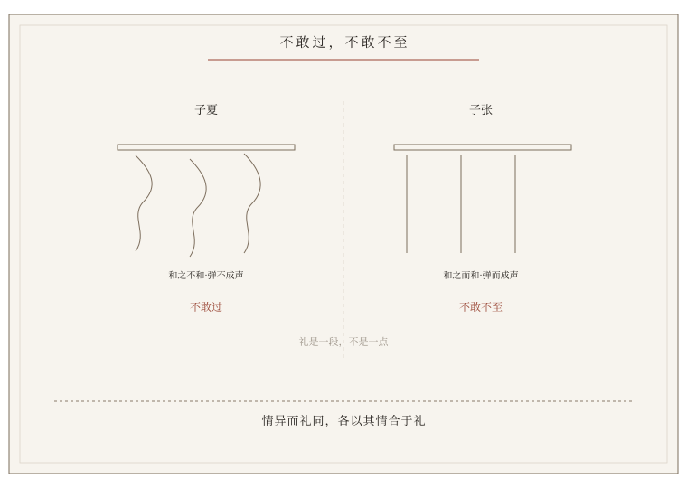

檀弓上 · 三·五十八 · 第 261 课
子夏既除喪而見，予之琴，和之不和，彈之而不成聲。作而曰：「哀未忘也，先王制禮，而弗敢過也。」子張既除喪而見，予之琴，和之而和，彈之而成聲。作而曰：「先王制禮，不敢不至焉。」
说什么事：两人都除了丧，都从孔子那里得到一张琴。一个调不准、弹不成声，说自己「不敢过」；一个调得准、弹得成声，说自己「不敢不至」。同一句「先王制礼」，一个守其上，一个守其下。
落在哪一层：礼，兼及礼数与礼意。论「情异而礼同」。
为何编在此位：上两节皆曾子自认不如子游，是「学」；此节子夏、子张各以情合礼，是「成」。编者以二人并记，明礼不责同情。
【经】子夏既除喪而見，予之琴，和之不和，彈之而不成聲。作而曰：「哀未忘也，先王制禮，而弗敢過也。」子張既除喪而見，予之琴，和之而和，彈之而成聲。作而曰：「先王制禮，不敢不至焉。」
【注】见于孔子。予之琴，和之不和、弹之而不成声，乐曲人心。作，起。子张「虽情异，善其俱顺礼」。
【疏】此一节论子夏、子张居丧顺礼之事。案《家语》及《诗传》皆言子夏丧毕，夫子与琴，援琴而弦，衎衎而乐；闵子骞丧毕，夫子与琴，援琴而弦，切切而哀，与此不同者，当以《家语》及《诗传》为正。知者，以子夏丧亲无异闻，焉能弹琴而不成声？而闵子骞至孝之人，故孔子善之云「孝哉，闵子骞」。然《家语》《诗传》云「援琴而弦，切切」，以为正也。熊氏以为子夏居父母之丧异，故不同也。
既除丧 丧服已除。
见 见于孔子。见，贤遍反。
予之琴 给他一张琴。予，与。
和 两读：调弦曰和（音禾）；弦响应律曰和（胡卧反）。此处两义并用。
作 注「起」。起身。
弗敢过 不敢越过礼所许。
不敢不至 不敢不到礼所许。
虽情异，善其俱顺礼 注语。情不同，而皆顺礼，故善之。
子夏除了丧来见孔子，孔子给他一张琴。他调弦，调不成；弹，弹不成调。起身说：「哀还没忘。先王制礼，我不敢越过它。」
子张除了丧来见孔子，孔子也给他一张琴。他调弦，调得成；弹，弹得成调。起身说：「先王制礼，我不敢不到。」
同一个动作——除丧之后弹琴——两个人做出两种样子。子夏琴不听手，是他自己不许琴听；子张琴听手，是他自己不许手停下。
「不敢过」与「不敢不至」，是两个方向的自限，都扣在「先王制礼」四字上。前者怕越过，后者怕不到。礼在这里不是一条线，是一段区间：上有限，下亦有限；有人从上边守，有人从下边守。
注一句「虽情异，善其俱顺礼」，是全节的眼：礼不要求人人的情一样，只要求各以其情合于礼。
第一层 琴不听手 疏「乐曲人心」。琴是验心之器：心平则弦和，心未平则弦不和。子夏不是不会弹，是不肯让手先于哀而安。这一层极要紧：礼所制的是外，琴所验的是内；外已除而内未除，则外虽合礼，内犹自拘。
第二层 两个「不敢」 「不敢过」是把礼当上限，「不敢不至」是把礼当下限。同守一礼，一从上收，一从下起。若二人相非，则礼成争场；二人相安，则礼成共域。孔子并记而不评，只以「善其俱顺礼」一语收之。
第三层 先表态还是先做事 两人都是先和、先弹，然后「作而曰」。不是先说「我哀未忘」再弹给孔子看，是弹了不成声，起身才说。此见古人说话的分寸：先有事实，后有言语。
第四层 《家语》之异 疏举《家语》《诗传》「子夏丧毕，援琴而弦，衎衎而乐」，与《檀弓》不同，而断以《家语》为正，理由是「子夏丧亲无异闻，焉能弹琴而不成声」，又举闵子骞「切切而哀」为比。此是疏家存异之例：经不可改，异不可没，两存而择一，择亦不废其一。
与今日何干 同一件规定，有人做到下限就停，有人做到上限才安。二者不必相非。最怕的是以自己的情量别人的情：我尚未平，便看轻那已平的人；我已平，便看不惯那还不平的人。此节给的尺是：礼是一段，不是一点。
| 左 | 右 |
|---|---|
| 子夏：和之不和 | 琴不听手 |
| 弹之不成声 | 心未平 |
| 哀未忘 | 情未除 |
| 弗敢过 | 守上限 |
| 子张：和之而和 | 琴听手 |
| 弹之而成声 | 心已平 |
| 不敢不至 | 守下限 |
| 情异而俱顺礼 | 礼是一段，不是一点 |
画一间简素的堂，视点平。堂中一案横置，案上并放两张琴：左琴的弦松垂、几根歪斜，右琴的弦平直。案左坐着一位瘦士人（子夏，衣素、双手离琴、头微低）；案右坐着一位壮士人（子张，衣素、手按琴面、身微前）。两人身后各有一道空席。不写文字、不画人面细节。赭色只用在左琴那几根歪弦与两人身后席角的一小片。
